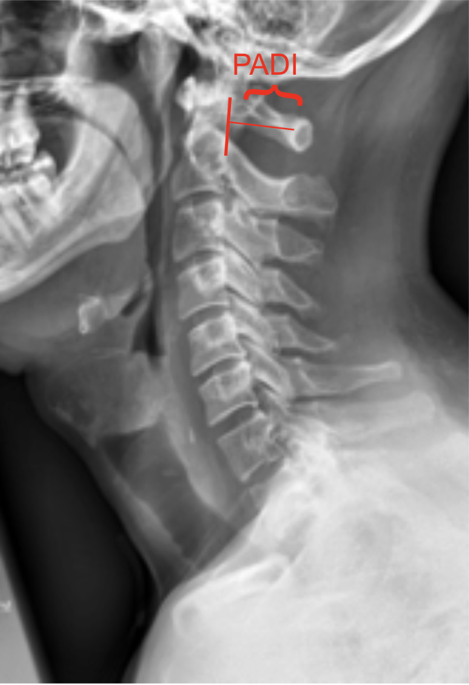
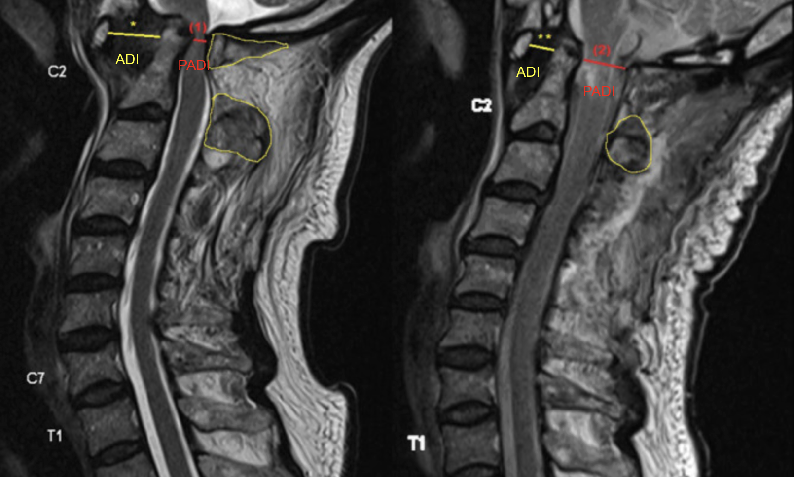

MRI of abnormal ADI/PADI with severe central canal stenosis due to vertebral osteomyelitis (left). Interval MRI showing decreased ADI and increased PADI status post C1 laminectomy. Adapted from: Low G, Leong A, George R, Tan G. C1/C2 osteomyelitis secondary to malignant otitis externa complicated by atlantoaxial subluxation-a case report and review of the literature. AME Case Rep. 2020 Jul 30;4:19. doi: 10.21037/acr.2020.03.04. PMID: 32793861; PMCID: PMC7396226.
1) Description of Measurement
The Posterior Atlantodental Interval (PADI), also known as the space available for the cord (SAC), is the distance between the posterior surface of the odontoid process (dens) and the anterior surface of the posterior arch of the atlas (C1).
It represents the effective canal diameter at the atlantoaxial level and is a critical measurement for evaluating cervicomedullary compression. A decreased PADI suggests potential spinal cord impingement, even when the atlantodental interval (ADI) is within normal limits.
2) Instructions to Measure
3) Normal vs. Pathologic Ranges
4) Important References
Boden SD, Dodge LD, Bohlman HH, Rechtine GR. Rheumatoid arthritis of the cervical spine. A long-term analysis with predictors of paralysis and recovery. J Bone Joint Surg Am. 1993 Sep;75(9):1282-97. doi: 10.2106/00004623-199309000-00004.
White AA, Panjabi MM. Clinical Biomechanics of the Spine. 2nd ed. Philadelphia, PA: Lippincott; 1990.
Dvorak J, Schneider E, Saldinger P, Rahn B. Biomechanics of the craniocervical region: the alar and transverse ligaments. J Orthop Res. 1988;6(3):452-61. doi: 10.1002/jor.1100060317.
Smoker WR. Craniovertebral junction: normal anatomy, craniometry, and congenital anomalies. Radiographics. 1994 Mar;14(2):255-77. doi: 10.1148/radiographics.14.2.8190952.
5) Other info....
PADI < 15 mm is associated with myelopathy and poor neurological outcomes in both traumatic and inflammatory (e.g. rheumatoid) atlantoaxial instability
Unlike the ADI, with reflects bony displacement, PADI more directly correlates with neurological compression
The PADI is a functional measure of canal space, unlike the ADI which measures ligamentous instability.
MRI correlation is strongly recommended when PADI is borderline (< 15 mm) to directly evaluate cord compression and signal changes.
In rheumatoid arthritis, progressive pannus formation can reduce PADI without major change in ADI, leading to late-onset myelopathy.
CT or MRI provides greater accuracy, but PADI on X-ray remains a simple and reproducible screening tool for instability and canal narrowing.
PADI < 10 mm almost always indicates neurologic compromise.